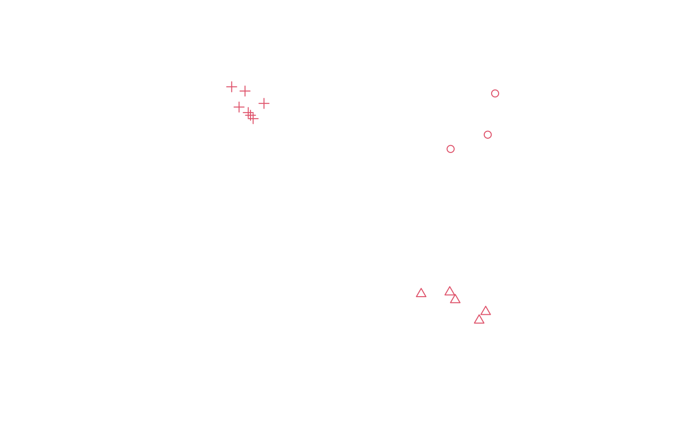
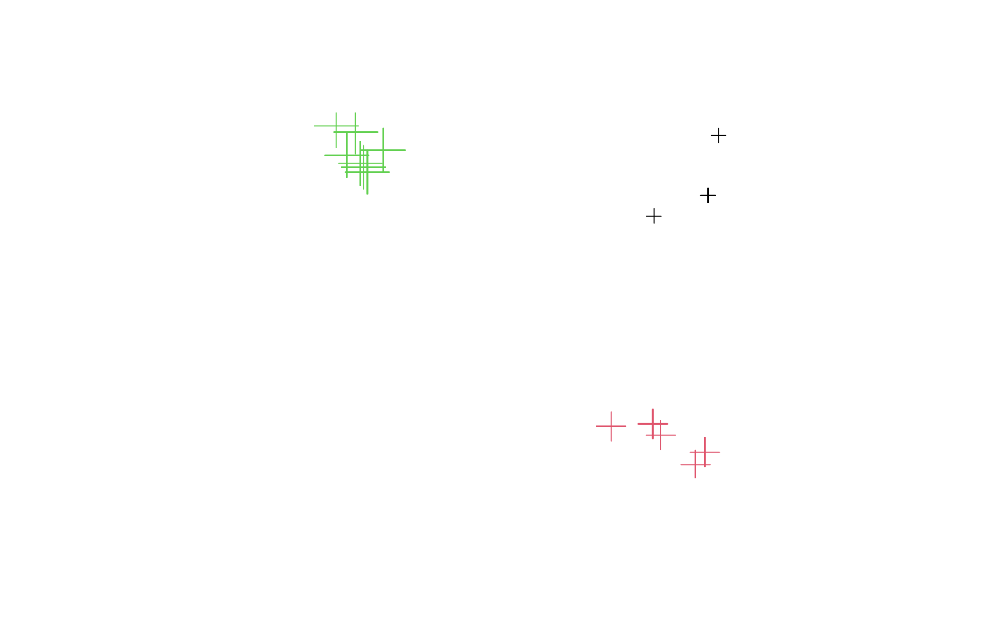

SpatialMultiPoints.Rdcreate objects of class SpatialMultiPoints-class or
SpatialMultiPointsDataFrame-class from
coordinates, and from coordinates and data.frames
SpatialMultiPoints(coords, proj4string=CRS(as.character(NA)), bbox = NULL) SpatialMultiPointsDataFrame(coords, data, proj4string = CRS(as.character(NA)), match.ID, bbox = NULL)
| coords | list with in each element a numeric matrix or data.frame with coordinates (each row representing a point); in case of SpatialMultiPointsDataFrame an object of class SpatialMultiPoints-class is also allowed |
|---|---|
| proj4string | projection string of class CRS-class |
| bbox | bounding box matrix, usually NULL and constructed from the data, but may be passed through for coercion purposes if clearly needed |
| data | object of class |
| match.ID | logical or character; if missing, and |
SpatialMultiPoints returns an object of class SpatialMultiPoints;
SpatialMultiPointsDataFrame returns an object of class SpatialMultiPointsDataFrame;
cl1 = cbind(rnorm(3, 10), rnorm(3, 10)) cl2 = cbind(rnorm(5, 10), rnorm(5, 0)) cl3 = cbind(rnorm(7, 0), rnorm(7, 10)) mp = SpatialMultiPoints(list(cl1, cl2, cl3)) mpx = rbind(mp, mp) # rbind method plot(mp, col = 2, cex = 1, pch = 1:3)mp#> SpatialMultiPoints: #> [[1]] #> [,1] [,2] #> [1,] 9.569253 8.134881 #> [2,] 11.478721 8.868392 #> [3,] 11.857651 10.990458 #> #> [[2]] #> [,1] [,2] #> [1,] 9.524533 0.7661554 #> [2,] 11.372238 -0.2430597 #> [3,] 11.037635 -0.6826439 #> [4,] 9.806764 0.3658440 #> [5,] 8.054232 0.6761772 #> #> [[3]] #> [,1] [,2] #> [1,] -0.83765077 10.006060 #> [2,] -1.00494904 11.113567 #> [3,] -1.69035841 11.332774 #> [4,] -0.72114387 9.867545 #> [5,] -0.58664809 9.694261 #> [6,] -0.02860257 10.477307 #> [7,] -1.31097374 10.289963 #> #> Coordinate Reference System (CRS) arguments: NAmp[1:2]#> SpatialMultiPoints: #> [[1]] #> [,1] [,2] #> [1,] 9.569253 8.134881 #> [2,] 11.478721 8.868392 #> [3,] 11.857651 10.990458 #> #> [[2]] #> [,1] [,2] #> [1,] 9.524533 0.7661554 #> [2,] 11.372238 -0.2430597 #> [3,] 11.037635 -0.6826439 #> [4,] 9.806764 0.3658440 #> [5,] 8.054232 0.6761772 #> #> Coordinate Reference System (CRS) arguments: NA#> SpatialMultiPoints: #> geometry #> 1 MULTIPOINT (9.57 8.13,11.5 8.87,11.9 11) #> 2 MULTIPOINT (9.52 0.766,11.4 -0.243,11 -0.683,9.81 0.366,8.05 0.676) #> 3 MULTIPOINT (-0.838 10,-1 11.1,-1.69 11.3,-0.721 9.87,-0.587 9.69,-0.0286 10.5,-1.31 10.3) #> Coordinate Reference System (CRS) arguments: NA#> coordinates a #> 1 (9.569253, 8.134881) 1 #> 1.1 (11.47872, 8.868392) 1 #> 1.2 (11.85765, 10.99046) 1 #> 2 (9.524533, 0.7661554) 2 #> 2.1 (11.37224, -0.2430597) 2 #> 2.2 (11.03763, -0.6826439) 2 #> 2.3 (9.806764, 0.365844) 2 #> 2.4 (8.054232, 0.6761772) 2 #> 3 (-0.8376508, 10.00606) 3 #> 3.1 (-1.004949, 11.11357) 3 #> 3.2 (-1.690358, 11.33277) 3 #> 3.3 (-0.7211439, 9.867545) 3 #> 3.4 (-0.5866481, 9.694261) 3 #> 3.5 (-0.02860257, 10.47731) 3 #> 3.6 (-1.310974, 10.28996) 3as(mpdf, "data.frame")#> X1 X2 index a #> X1 9.56925327 8.1348806 1 1 #> X1.1 11.47872075 8.8683921 1 1 #> X1.2 11.85765083 10.9904582 1 1 #> X2 9.52453329 0.7661554 2 2 #> X2.1 11.37223790 -0.2430597 2 2 #> X2.2 11.03763473 -0.6826439 2 2 #> X2.3 9.80676437 0.3658440 2 2 #> X2.4 8.05423167 0.6761772 2 2 #> X3 -0.83765077 10.0060602 3 3 #> X3.1 -1.00494904 11.1135666 3 3 #> X3.2 -1.69035841 11.3327744 3 3 #> X3.3 -0.72114387 9.8675445 3 3 #> X3.4 -0.58664809 9.6942610 3 3 #> X3.5 -0.02860257 10.4773073 3 3 #> X3.6 -1.31097374 10.2899630 3 3mpdf[1:2,]#> coordinates a #> 1 (9.569253, 8.134881) 1 #> 1.1 (11.47872, 8.868392) 1 #> 1.2 (11.85765, 10.99046) 1 #> 2 (9.524533, 0.7661554) 2 #> 2.1 (11.37224, -0.2430597) 2 #> 2.2 (11.03763, -0.6826439) 2 #> 2.3 (9.806764, 0.365844) 2 #> 2.4 (8.054232, 0.6761772) 2